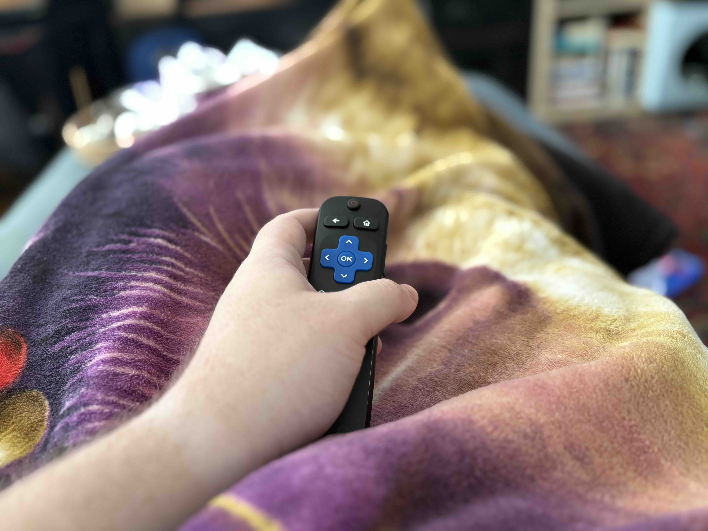
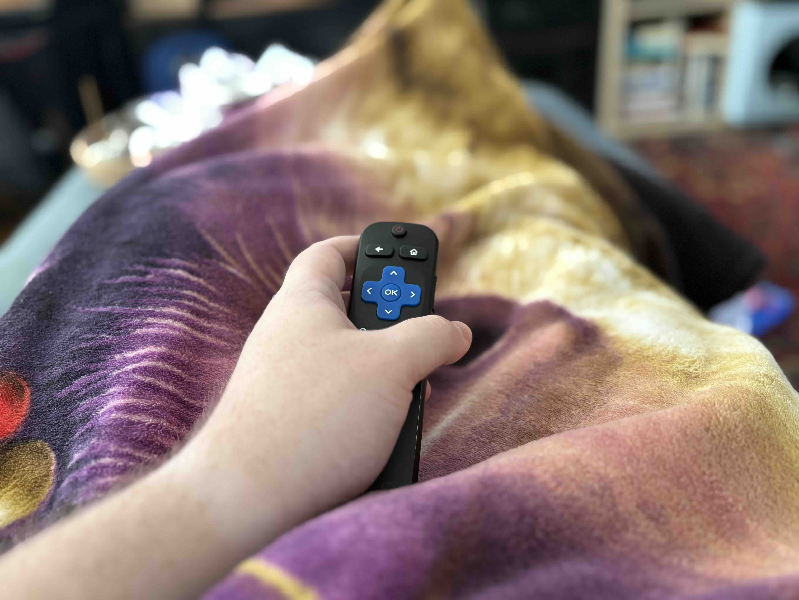

I plan to create a body of work that explores how human bodies interact and connect with the physical environment that surrounds them. In an increasingly digitized and sanitized world, how do we reconnect with the natural world? What about our modern world is helpful and healing for our bodies, and what is harmful and inhibiting?


 


New York City is at once the largest city in the country and feels small. With so many cultures, languages, and cuisines from around the globe, living here can feel like the world is at your fingertips. From the small spaces to the chance encounters of bumping into someone you know, New York is a big city in a small world.